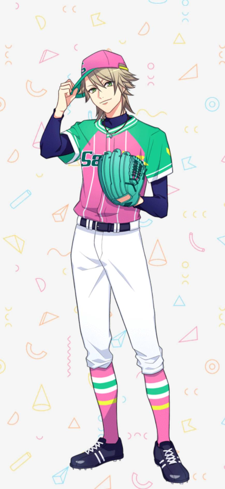
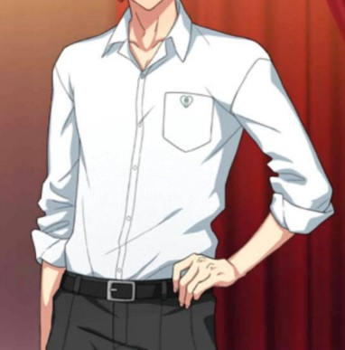

夏四.Ver 設定
榎本隆大
櫻高二年級生，跟小早川空同班，擁有班上全部人的聯絡方式（尤其是女生的），表面上看起來很輕浮，實際上很專情，課業方面意外的很擅長。
二壘手，一開學就被拉進棒球隊湊人數，原本是不敢興趣，還會在練習時滑手機，但後來逐漸對棒球著迷。
外表：亞麻金的長髮，綠色的眼睛，臉上有著燦爛的笑容，性格開朗心思細膩。
制服為白色襯衫、灰色褲子

圖為遊戲內的劇情截圖
代表物：
手機
喜歡在社群媒體分享生活，覺得LIME的貼圖很可愛，所以常常會發貼圖給別人。